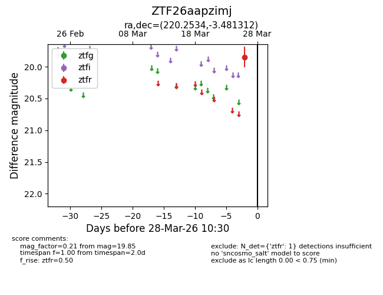
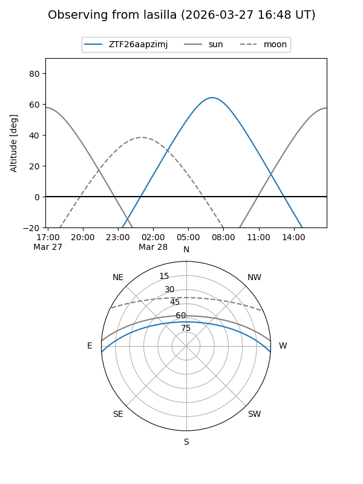
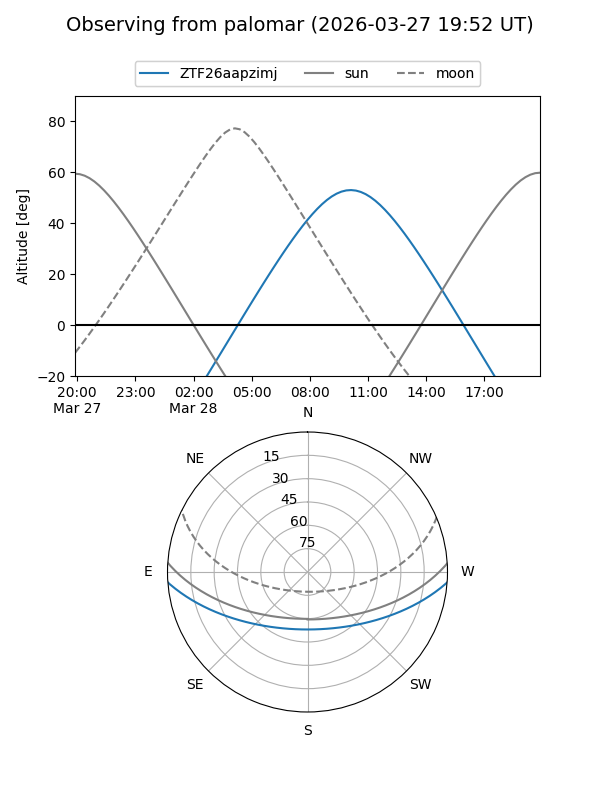

ZTF26aapzimj
Target ZTF26aapzimj at 2026-03-28 10:33
Aliases and brokers:
FINK: link
Lasair: link
ALeRCE: link
alt names
ZTF26aapzimj (ztf,fink_ztf)
Coordinates:
equatorial (ra, dec) = 220.2534,-3.48131
equatorial (HMS+DMS) = 14:41:00.81,-03:28:52.72
galactic (l, b) = (348.0012,+49.55612)
Flags:
Photometry:
last ztfr=19.85
1 ztfr detections
Lightcurve

Visibility


Additional plots